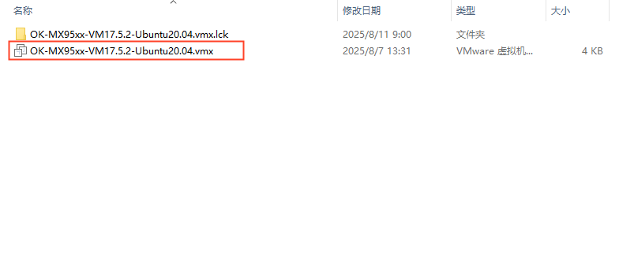
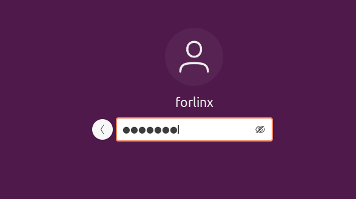
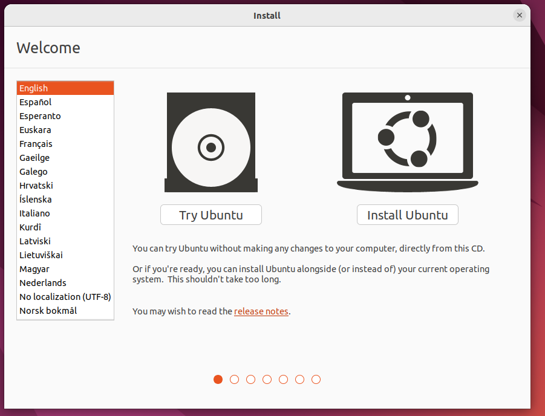
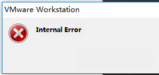
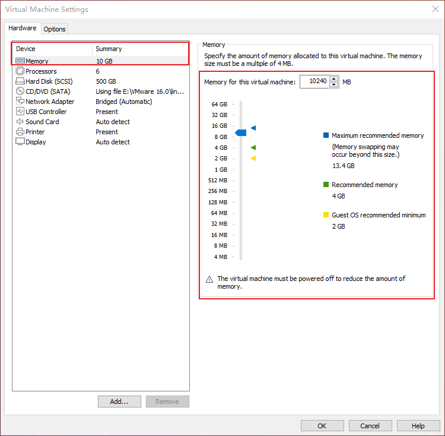
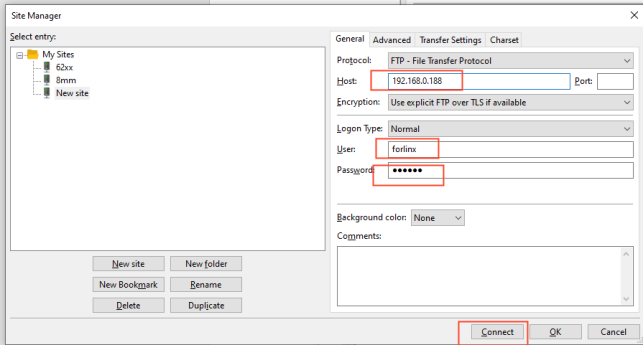

Linux6.6.3_User’s Compilation Manual_V1.1
Document classification: □ Top secret □ Secret □ Internal information ■ Open
Copyright
The copyright of this manual belongs to Baoding Folinx Embedded Technology Co., Ltd. Without the written permission of our company, no organizations or individuals have the right to copy, distribute, or reproduce any part of this manual in any form, and violators will be held legally responsible.
Forlinx adheres to copyrights of all graphics and texts used in all publications in original or license-free forms.
The drivers and utilities used for the components are subject to the copyrights of the respective manufacturers. The license conditions of the respective manufacturer are to be adhered to. Related license expenses for the operating system and applications should be calculated/declared separately by the related party or its representatives.
Application Scope
This manual is mainly applicable to the Linux6.6.3 operating system on the Forlinx OK-MX9596-C platform. Other platforms can also refer to it, but there will be differences between different platforms. Please make modifications according to the actual conditions.
Revision History
Date |
Manual Version |
SoM Version |
Carrier Board Version |
Revision History |
|---|---|---|---|---|
11/08/2025 |
V1.0 |
V1.1 |
V1.1 |
Initial Version |
Overview
This manual is designed to enable you to quickly understand the compilation process of the products and familiarize yourself with the compilation methods of Forlinx products. The application needs to be cross-compiled on an Ubuntu host before it can run on the development board. By following the methods provided in the compilation manual and performing practical operations, you will be able to successfully compile your own software code.
The manual is mainly divided into four chapters:
Chapter 1. is mainly about the installation of VMware, and the version used is VMware® Workstation 15 Pro15.1.0. Users need to install VMware before using the ubuntu development environment;
Chapter 2. mainly introduces the method of loading the ubuntu development environment provided by Forlinx, and the development environment is 64-bit ubuntu20.04;
Chapter 3. mainly introduces the method of building a new ubuntu development environment. This section uses the 64 bit Ubuntu 22.04 as an example to describe the process of Ubuntu creation, cross-compiler installation, and QT Creator installation. Due to different computer configurations, unexpected problems may occur in the building process. It is recommended that beginners directly use the environment we have built;
Chapter 4. mainly describes the compiling method of the source code related to the development board, including the kernel source code compilation and the application program compilation.
1. Vmware Installation
Virtual Machine refers to a complete computer system with complete hardware system functions simulated bysoftware and running in a completely isolated environment. Virtual machines can simu late other kinds of operating systems; it is convenient for us to manage and use different development environments and operating systems in the development process.
Common virtual machine software includes VMware (VMWare ACE), Virtual Boxand Virtual PC, all of which can virtualize multiple computers on Windows systems. Our company adopts VMware. If you are not familiar with the virtual machine software, it is recommended to use the same virtual machine software as ours.
1.1 VMware Software Download and Purchase
Go to the VMware website https://www.vmware.com/cn.html to download Workstation Pro and get the product key. VMware is a paid software that requires purchasing, or you can choose to use a trial version.

After the download is complete, double-click the installation file to start the installation program.
1.2 VMware Installation
Step 1: Double-click the startup program to enter the installation wizard, and click “Next”;

Step 2: Check “I accept the terms in the license agreement (A)” and click “Next”;

Step 3: You can modify the installation location, install it to the partition where your computer installs the software, and click “Next”;

Step 4: Decide whether to check the two check boxes and click “Next”:

Step 5: Check the option to add the shortcuts and click “Next”;

Step 6: Click “Install”;

Step 7: Wait for the installation to complete;

Step 8: After the installation is completed, you can click “Finish” for trial. If you need to use it for a long time, please buy it from the official and fill in the license. Go to the license activation page and enter the purchased license key.
You can also click “Skip”. Once done, open the VMware software, click on “Help” in the status at the top, and enter the license key in the pop-up window.
1.3 VMware Network Connection
By default, after the virtual machine is installed, the network connection method is set to NAT, which shares the host machine’s IP address. This configuration does not need to be changed when performing tasks like installing dependencies or compiling code.
When the VMware virtual NIC is set to NAT mode in a virtual machine, the network in the Ubuntu environment can be set to dynamic IP. In this mode the virtual NAT device and the host NIC are connected to communicate for Internet access. This is the most common way to access the external network.
2. Importing the Forlinx Development Environment
Note:
It is recommended for beginners to directly use the pre-built virtual machine environment provided by Forlinx, which already includes installed cross-compiler and Qt environment. After understanding this chapter, you can jump directly to “4. Linux Compilation”;
If you need to manually set up the development environment, you can directly skip this chapter and refer to“3. Building the Development Environment Manually”;
The development environment provided is: forlinx (username), forlinx (password).
Forlinx provides an installed Ubuntu development environment, which customers can directly open and use in Vmware without installing additional software.
First, download the development environment provided by Forlinx. In the development environment documentation, there should be an MD5 checksum file. After downloading the development environment, you should verify the integrity of the compressed package using the MD5 checksum. (You can use an on-line MD5 checksum tool or download a specific MD5 checksum tool for this purpose). To check if the checksum in the verification file matches the checksum of the file itself. If they match, the file download is successful. If they don’t match, it suggests that the file may be corrupt, and you should consider downloading it again.

Select all the compressed packages and right click to extract them to the ok-mx95 development environment:
“OK-MX95xx-VM17.5.2-Ubuntu20.04.vmx” in the “OK-MX95xx-VM17.5.2-Ubuntu 20.04” folder is the file to be opened by the virtual machine after decompression.
Open the installed virtual machine.

Select the directory where the newly extracted OK-MX95xx-VM17.5.2-Ubuntu20.04 virtual machine file is located, and double-click to open the startup file.

After loading, click to start the virtual machine to run. Enter the system’s interface.
The provided development environment account is: forlinx and the password is: forlinx, fill in the password and select Sign in to log in.

So far, you have successfully entered the development environment provided by Forlinx, and customers can put the source code in the user information folder into the development environment to start compiling and other operations (See 4. Linux Compilation)
3. Building the Development Environment Manually
Ubuntu is a Linux operating system distribution primarily focused on desktop applications. Ubuntu has many advantages and offers its own strengths compared to other Linux distributions. First of all, installing the system is very easy, requiring very little setup, and is fully comparable to a Windows desktop system; secondly, the GUI is very user-friendly and mimics the shortcuts that are commonly used under XP; when installing and upgrading programs, you can install the dependent packages by the system itself through the network, so you don’t have to worry about the dependencies of the Linux system anymore. Considering everyone’s usage habits and learning needs, it would be a good choice to use Ubuntu Linux.
There are numerous versions of Linux desktop systems, and currently, all the Linux experiments and source code in this manual are performed on the Ubuntu 22.04 system. With other versions of Linux desktop systems, problems related to the gcc compiler and library files may occur. If you encounter similar issues, you can seek advice and inquire on the official forums of the Linux distribution vendor. If you are not familiar with Linux, the method introduced by Forlinx is highly recommended.
Why do we need to install these things? Because we need a Linux environment to do development work. We can’t compile Kernel source code, Qt applications, uboot and so on under Windows. We need to do these work under Linux environment. Given that most users are accustomed to the Windows environment, we use VMware software to provide Ubuntu virtual machines. Of course, you can also install Linux on your computer or server for development.
Next, it will introduce the process of building the virtual machine.
Note: Beginners are not recommended to set up a system on their own. It is recommended to use an existing virtual machine environment. If you do not need to set up the environment, you can skip this section.
3.1 Ubuntu System Virtual Machine Installation
The version of Ubuntu we chose to install is 22.04, and the introduction and development in this maual are all carried out on Ubuntu22.04. First go to the Ubuntu official website to get the Ubuntu 22.04 64 bit image, the download address is: http://releases.ubuntu.com/22.04/
Download “Ubuntu-22.04.1-desktop-amd64.iso” (you can download the version that you actually need; this is just an example with 22.04.1).

3.1.1 Vmware Ubuntu Image Installation
If customers want to learn to build their own virtual machines, they can choose to install new virtual machines. However, if you don’t have a need for this, we recommend downloading the virtual machine we built to save time and avoid problems, as building a virtual machine is tedious and time-consuming.
Step 1: Open the VMware software and click on “Create New Virtual Machine”. Enter the following interface, check “Customize (Advanced)” and click “Next”:

Step 2: Select the compatibility of the corresponding VMware version. The version can be viewed in Help-> About VMware Workstation. Click “Next” after confirmation:

Select “Install program from disc image file”, then click “Next”；

Enter the virtual machine name and configuration installation location, and click “Next”:

To configure the number of cores, click “Next”:

Configure appropriate memory space and select “Next”:

Set the network type, use the default NAT form for networking, and click “Next”. Keep the default values for the remaining steps until you reach the step to specify the disk capacity.

Using the recommended I/O controller, click “Next”:

Using the recommended disk type, click “Next”:

Using the default options, create a new virtual disk and click “Next”:

Allocate a disk size of 80G and divide the virtual disk into multiple files, and click “Next”:

Click “Next” by default:

Click “Finish”:

Once the virtual machine is powered on, select Try to Install Ubuntu.

Select the language and select install Ubuntu

Select a keyboard layout

Select to upgrade and install the software, and continue by default

Select the installation method and hard disk partition. The default is to install now and continue.

Enter the account no.

After that, the virtual machine starts to install the image and wait patiently.
3.1.2 Solutions to VMware Error Reporting
Error 1: Unable to connect to MKS: Too many socket connection attempts; giving up.

Solution: Right click on my computer to manage services and application services, and turn on all services related to VMware. After the service has started successfully, restart the virtual machine; or hang the virtual machine first, wait for it to start, and then continue to run the hung virtual machine.

Error 2: Internal error.

Solution: Refer to error 1.
Error 3: Unable to install service VMware Authorization Service (VMAuthdService):

Solution:
win+R
Enter services.msc

Then find the service and start it up as an authorization and authentication service for starting and accessing virtual machines.

WMI must be started first:

Error 4: Failed to install the hcmon driver

Solution: Delete C:\Windows\System32\drivers\hcmon.sys, then install again.
Error 5: Intel VT-x is disabled.

Solution:
Enter the BIOS interface (F2 or F12) when booting
②configuration–》intel virtual technology–》–“change disabled to enabled–“save the setting, exit and reboot.
Reopen VMware and power on the virtual machine.
If that doesn’t work, just turn the firewall off and reopen the VM. (varies by machine)
Error 6: The virtual machine appears to be in use… Acquiring Ownership (T)

Solution:
Shut down the virtual machine
Enter the storage directory of the virtual machine and delete the *.lck file. The lck represents the locked file.
Open the Windows Task Manager and kill the VMware process

Restart the virtual machine
Error 7: Failed to lock file.

Solution:
Enter the storage directory of the virtual machine
Delete .vmem.lck，.vmdk.lck，*.vmx.lck;
Restart the virtual machine and enter the virtual machine normally
Error 8: The virtual machine could not be started because there was not enough memory available on the host.
Solution:
The virtual machine does not have enough memory to run the image’s maximum requirements； increase the virtual machine’s memory and reboot the virtual machine

3.2 Ubuntu Common Software Installation
3.2.1 VScode
Click the icon similar to a package on the left side of the desktop to see some tools. We can also search for the tools we want. For example, we download a VScode tool, which is very convenient for our daily coding.

Please search for the tool we need, click in to view details, click install to download, wait for the download to complete automatic installation, and then click “Launch” to run it.


3.2.2 NFS Installation
The terminal executes the following command:
forlinx@ubuntu:~$ sudo apt-get install -y nfs-kernel-server nfs-common portmap

3.2.3 FTP Server
After FTP is installed, files under Windows system and files under Ubuntu system can be transferred to each other. Due to compatibility issues between Ubuntu 22.04 and VMware Tools, file transfers are performed in this way.
3.2.3.1 FTP Installation
forlinx@ubuntu:~$ sudo apt-get install vsftpd
After the installation, use the vim command to open the/etc/vsftpd. conf, and open the following two configurations:
local_enable=YES
write_enable=YES
After saving and exiting, restart the FTP service
forlinx@ubuntu:~$ sudo /etc/init.d/vsftpd restart
3.2.3.2 Client Connection for Windows
Path: OK-MX9352-C (Linux) User Profile/Tools/FileZilla_3.24.0.0_win64-setup.exe
Note: It is necessary to ensure that the Windows system and the Ubuntu system network are interoperable. Otherwise, it is necessary to set the network configuration of the virtual machine.
After the installation is completed, open the client and the following interface appears:

Click File-site Management

Add the IP address under the Ubuntu system to the host, user name: forlinx, password: forlinx. Click Connection

After a successful connection, you can display the directory structure under the Ubuntu system and transfer files from the Windows system to the Ubuntu system via network.

3.3 Cross-compilation Environment
The cross-compilation environment is divided into installing the toolchain and setting cross-compilation environment variables.
3.3.1 Cross-compilation Tool Chain Installation
Make sure that the network is open during the installation process and that the Ubuntu system has access to an extranet.
Step 1: Create a working directory in Ubuntu:
forlinx@ubuntu:~$ mkdir -p /home/forlinx/work
Step 2: Copy the installation script to this directory
Path: user information \ 2-image and source code \ 1-source code \ OKMX95xx-linux-fsl-imx-xwayland-glibc-x86 _ 64-imx-image-full-armv8a-imx95-19x19-lpd in the compressed package of sdk. tar. zst. dr5-evk-toolchain-6.6-nanbield.sh
Step 3: Go to the/home/forlinx/work directory:
forlinx@ubuntu:~$ cd /home/forlinx/work
**Step 4:**Execute the following command to install:
forlinx@ubuntu:~$ ./fsl-imx-xwayland-glibc-x86_64-imx-image-full-armv8a-imx95-19x19-lpddr5-evk-toolchain-6.6-nanbield.sh
NXP i.MX Release Distro SDK installer version 6.6-nanbield
==========================================================
Enter target directory for SDK (default: /opt/fsl-imx-xwayland/6.6-nanbield):
You are about to install the SDK to "/opt/fsl-imx-xwayland/6.6-nanbield". Proceed [Y/n]? y //Enter y
[sudo] password for forlinx: forlinx //Enter forlinx user password
Extracting SDK..................................................................
.....................................................................
.....................................................................
.....................................................................
.....................................................................
.......................................................done
Setting it up...done
SDK has been successfully set up and is ready to be used.
Each time you wish to use the SDK in a new shell session, you need to source the environment setup script e.g.
$ . /opt/fsl-imx-xwayland/6.6-nanbield_imx95/environment-setup-armv8a-poky-linux
This printed information proves that the installation was successful:
SDK has been successfully set up and is ready to be used.
3.3.2 Environment Variables Settings
Note:
After setting the environment variables, you don’t need to reset them the next time you compile as long as you don’t change terminals;
If you reopen a new terminal or switch accounts, you need to reset the environment variables before compiling.
The main purpose of setting up the compilation environment is to specify the target architecture and cross-compilation toolchain, as well as the paths of some libraries used in the compilation process, etc. Use the following commands to configure the compilation environment(.followed by a space):
forlinx@ubuntu:~$ . /opt/fsl-imx-xwayland/6.6-
nanbield_imx95/environment-setup-armv8a-poky-linux
Judge whether the setting is successful by the following command:
forlinx@ubuntu:~$ $CC -v
Using built-in specs.
COLLECT_GCC=aarch64-poky-linux-gcc
[…]
Thread model: posix
Supported LTO compression algorithms: zlib zstd
gcc version 13.2.0 (GCC)
//Confirm successful settings through gcc version information
4. Related Code Compilation
This chapter mainly describes the compilation methods for the source code related to the development board, including the separate compilation of the kernel source code, the compilation of application programs, and the packaging of the flashing image, etc., providing references for users.
4.1 Preparation Before Compilation
4.1.1 Description of the Environment
Development environment OS: Ubuntu 20.04.6 LTS
Cross tool chain:
aarch64-linux-gnu-
fsl-imx-xwayland-glibc-x86_64-imx-image-full-armv8a-imx95-19x19-lpddr5-evk-toolchain-6.6-nanbield.sh
arm-gnu-toolchain-12.3.rel1-x86_64-arm-none-eabi.tar.xz
Bootloader of Development board: U-Boot 2023.04
Development Board Kernel: Linux-6.6.3
Development board porting QT version: qt6.5.3
4.1.2 Code Preparation
Source Code: User Information \ Software Information \ 2-Image and Source Code \ 1-Source Code
Copy the code to the/home/forlinx/work/directory of the virtual machine and extract it
forlinx@ubuntu:~$ cat OKMX95xx-linux-sdk.tar.zst.0* | tar -I zstd -xv
4.1.3 Configuration of the Cross-compiler
Compilation Environment Installation
forlinx@ubuntu:~$ sudo apt-get update
forlinx@ubuntu:~$ sudo apt-get upgrade
forlinx@ubuntu:~$ sudo apt-get install -y openssh-server vim git
build-essential gcc-aarch64-linux-gnu zstd libssl-dev flex bison
libdouble-conversion3 libxcb-cursor0 p7zip-full
forlinx@ubuntu:~ $ cd ~/work/OK-MX95xx-C-linux-sdk
Install the cross-compilation tool chain (with the release of the new version of SDK, it may need to be updated, just perform the following steps again)
forlinx@ubuntu:~/work/OK-MX95xx-C-linux-sdk$ sudo tar -xf arm-gnu-
toolchain-12.3.rel1-x86_64-arm-none-eabi.tar.xz -C /opt/arm-gnu-
toolchain
forlinx@ubuntu:~/work/OK-MX95xx-C-linux-sdk$ sudo sh fsl-imx-
xwayland-glibc-x86_64-imx-image-full-armv8a-imx95-19x19-lpddr5-evk-
toolchain-6.6-nanbield.sh
NXP i.MX Release Distro SDK installer version 6.6-nanbield
==========================================================
Enter target directory for SDK (default: /opt/fsl-imx-xwayland/6.6-
nanbield): /opt/fsl-imx-xwayland/6.6-nanbield_imx95
You are about to install the SDK to "/opt/fsl-imx-xwayland/6.6-
nanbield". Proceed [Y/n]? y
Extracting SDK....................................
forlinx@ubuntu:~/work/OK-MX95xx-C-linux-sdk$ sudo rm /opt/fsl-imx-
xwayland/6.6-nanbield_imx95/sysroots/x86_64-pokysdk-linux/usr/bin/ld
forlinx@ubuntu:~/work/OK-MX95xx-C-linux-sdk$ sudo rm /opt/fsl-imx-
xwayland/6.6-nanbield_imx95/sysroots/x86_64-pokysdk-linux/usr/x86_64-
pokysdk-linux/bin/ld
Compile application app cross compilation tool chain
qmake path“/opt/fsl-imx-xwayland/6.6-nanbield_imx95/sysroots/x86_64-pokysdk-linux/usr/bin/qmake”
gcc path“/opt/fsl-imx-xwayland/6.6-nanbield_imx95/sysroots/x86_64-pokysdk-linux/usr/bin/aarch64-poky-linux/aarch64-poky-linux-gcc”
g path:++“/opt/fsl-imx-xwayland/6.6-nanbield_imx95/sysroots/x86_64-pokysdk-linux/usr/bin/aarch64-poky-linux/aarch64-poky-linux-g++”
gdb path“/opt/fsl-imx-xwayland/6.6-nanbield_imx95/sysroots/x86_64-pokysdk-linux/usr/bin/aarch64-poky-linux/aarch64-poky-linux-gdb”
4.2 Compilation

4.2.1 Instructions for Using the SDK Path and Files
Name |
path |
|---|---|
Linux kernel source code |
OKMX95xx-linux-sdk/OKMX95xx-linux-kernel/ |
Kernel default configuration file |
OKMX95xx-linux-sdk/OKMX95xx-linux-kernel/arch/arm64/configs/OKMX95xx-C_defconfig |
Device tree file |
OKMX95xx-linux-sdk/OKMX95xx-linux-kernel/arch/arm64/boot/dts/freescale/OK-MX95xx-C.dts |
File system source files. |
OKMX95xx-linux-sdk/OKMX95xx-linux-fs/ |
When compiling, the files in the overlay will overwrite those with the same name under the same path in rootfs, so users can operate in the overlay-related directory when modifying the file system. |
|
SDK root directory |
OKMX95xx-linux-sdk/ |
Test program source code |
OKMX95xx-linux-sdk/appsrc/ |
Generate image path |
OKMX95xx-linux-sdk/images |
Tools directory |
OKMX95xx-linux-sdk/tools |
4.2.2 Uboot Compilation
Uboot is configured as follows:
config: OKMX95xx-C_defconfig
Cross-compilation chain: /opt/fsl-imx-xwayland/6.6-nanbield_imx95
Arch: arm
The reference commands are shown below:
forlinx@ubuntu:~/work/OK-MX95xx-C-linux-sdk$ ./build.sh uboot
The resulting file is images/okmx95-boot.bin
The uboot code is not provided by default. If necessary, please contact Forlinx.
4.2.3 Kernel Compilation
The kernel is configured as follows:
config: OKMX95xx-C_defconfig
dts: arch/arm64/boot/dts/freescale/OK-MX95xx-C.dts
Cross-compilation chain: aarch64-linux-gnu-gcc
Arch: arm64
The reference commands are shown below:
forlinx@ubuntu:~/work/OK-MX95xx-C-linux-sdk$ ./build.sh kernel
The generated files are images/Image, images/OK-MX95xx-C. Dtb, and overlay/lib/modules/*
4.2.4 Test Program Compilation
Cross-compilation chain: /opt/fsl-imx-xwayland/6.6-nanbield_imx95
Arch：arm64
The reference commands are shown below:
forlinx@ubuntu:~/work/OK-MX95xx-C-linux-sdk$ ./build.sh apps
The generated file path is overlay/usr/bin/
4.2.5 Packaging Flashed Image
Package boot.img, rootfs.ext4 to generate okmx95-linux-fs.sdcard and split into 2GB packages.
The reference commands are shown below:
forlinx@ubuntu:~/work/OK-MX95xx-C-linux-sdk$ ./build.sh rootfs
forlinx@ubuntu:~/work/OK-MX95xx-C-linux-sdk$ ./build.sh imgs
The generated file is images/ok8mp-linux-fs. sdcard. a *. Please refer to the user’s manual for the flashed image.
4.2.6 Ramdisk
The ramdisk is required to flash with the TF card
The reference commands are shown below:
forlinx@ubuntu:~/work/OK-MX95xx-C-linux-sdk$ ./build.sh ramdisk
The generated files are images/ramdisk. img and images/boot. scr.
4.2.7 Compiling Self-created Applications
Cross-compilation chain: /opt/fsl-imx-xwayland/6.6-nanbield_imx95
Arch：arm64
Refer to the environment variables defined in /opt/fsl-imx-xwayland/6.6-nanbield_imx95/environment-setup-armv8a-poky-linuxand appsrc/forlinx-cmd/watchdog/Makefile
Take fltest_watchdog as an example to illustrate the compilation flow
forlinx@ubuntu:~/work/OK-MX95xx-C-linux-sdk/appsrc/forlinx-
cmd/watchdog$ source /opt/fsl-imx-xwayland/6.6-
nanbield_imx95/environment-setup-armv8a-poky-linux
forlinx@ubuntu:~/work/OK-MX95xx-C-linux-sdk/appsrc/forlinx-
cmd/watchdog$ make
The generated file is fltest_watchdog.
Take fltest _ qt _ watchdog as an example to explain compiling qt program.
forlinx@ubuntu:~/work/OK-MX95xx-C-linux-sdk/appsrc/forlinx-
qt/fltest_qt_watchdog$ source /opt/fsl-imx-xwayland/6.6-
nanbield_imx95/environment-setup-armv8a-poky-linux
forlinx@ubuntu:~/work/OK-MX95xx-C-linux-sdk/appsrc/forlinx-
qt/fltest_qt_watchdog$ qmake
forlinx@ubuntu:~/work/OK-MX95xx-C-linux-sdk/appsrc/forlinx-
qt/fltest_qt_watchdog$ make
Copy the compiled fltest_qt_watchdog to the development board to run the test.